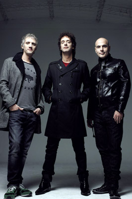
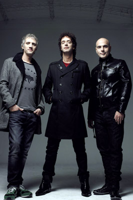

Esta página es para los grandes fans de tres bandas muy representativas en la historia de la música rock y rock punk, QUEEN, GREEN DAY Y SODA STEREO
| Green Day | Queen | Soda Stereo | Galería | Canciones Más Conocidas | Álbumes |
 

Fue creado en 1970, el grupo estuvo formado por Freddie Mercury (voz), Brian May (guitarra), Roger Taylor (batería) y John Deacon (bajo). Los orígenes de Queen se remontan al inicio de los sesenta, cuando el joven guitarrista Brian Harold May (nacido en 1947) comenzó a tocar en un grupo semiprofesional llamado 1984.
Green Day es una banda estadounidense de punk rock integrada por Billie Joe Armstrong, Mike Dirnt y Tré Cool. El grupo originario de Berkeley, California, se gestó prematuramente en 1986 bajo el nombre de Sweet Children, con el baterista John Kiffmeyer (más conocido como Al Sobrante). En 1989 se cambiaron al nombre actual ya que el anterior (Sweet Children) se confundía con el de una banda local de esa época y poco después del lanzamiento de su primer álbum de estudio (39/Smooth), Tré Cool reemplazó a Al Sobrante.
Soda Stereo es una banda argentina de Rock alternativo formada en Buenos Aires en 1982 por Gustavo Cerati (voz y guitarra), Zeta Bosio (bajo) y Charly Alberti (batería), Soda Stereo ha encabezado las listas de todos los tiempos en Argentina, donde se establecieron varios récords de ventas de discos y asistencias a conciertos.